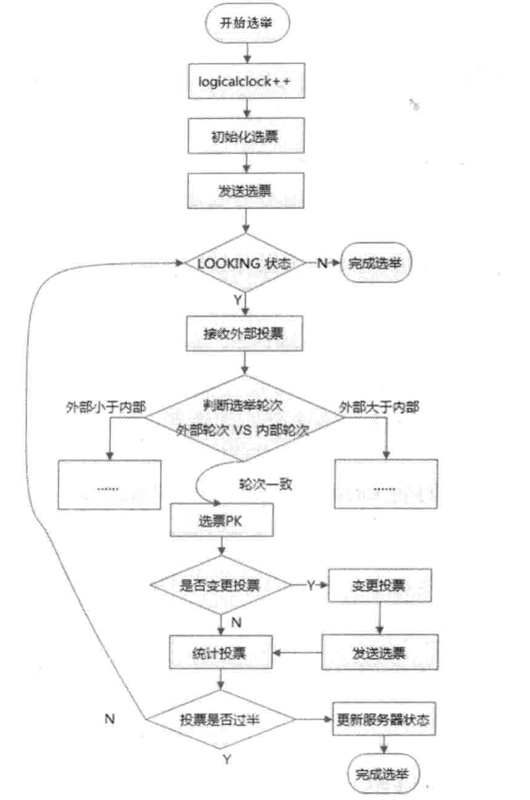

ZooKeeper - ZAB 一致性协议
概念
ZooKeeper 是一个分布式一致性的具体实现方案。
可以实现数据发布/订阅，负载均衡，命名服务，分布式协调/通知，集群管理，Master 选举，分布式锁，分布式队列，服务注册中心。
角色
- Leader，只有一个，它会发起并维护与各 Follwer 及 Observer 间的心跳。
- 向客户端提供读写，写操作要半数节点成功（不包括Observer），读操作会广播给其他节点。
- Follower，多个，它会响应 Leader 的心跳。
- 提供读请求，向 Leader 转发写请求。
- 在 Leader 不可用时参与 Leader 选举。
- 响应过半写入成功策略。
- Observer，多个，同样响应 Leader 的心跳。
- * 提供读请求，向 Leader 转发写请求。
- 不参与选举，也不参与过半写成功策略。
- 加入 Observer 是保证高可用，且加快了 Leader 选举的速度。
特性
保证了如下的分布式一致性特性：
- 顺序一致性，同个客户端事务请求会严格按顺序来执行。
- 原子性，事务具有原子性
- 单一视图，客户端无论连接哪个 ZooKeeper 服务器，看到的数据模型都是一致的。
- 可靠性，事务的作用是持久的。
- 实时性，事务作用后，客户端可以最终看到最新的数据状态。
目标
设计目标：
- 简单的数据模型：使用树状的命名空间 ZNode
- 可以构建集群：
- 顺序访问：利用一个全局唯一的递增序号
- 高性能：数据全部存储在内存中
其他
- 会话
- 集群通过 Session 向客户端标识一段会话
- 数据节点(Znode)
- 集群内部维护了一棵树作为数据模型
- 版本
- Znode 内部会维护一个版本信息
- 事件监视器(Watcher)
- 允许用户在节点上注册监听器，可以通知事件
- ACL(Access Control Lists) 权限控制策略
- create，创建子节点
- read，获得节点及其子节点列表
- write，更新节点数据
- delete，删除子节点
- admin，设置节点
ZAB 协议
ZAB(ZooKeeper Atomic broadcast protocol) 是 ZK 专门基于 Paxos 实现的一种支持崩溃恢复的原子广播协议。
从模式上可以分为两种模式
- 消息广播
- 崩溃恢复
从启动阶段上可以分为四个阶段：
- 选举阶段
- 发现阶段
- 同步阶段
- 广播阶段
下面会详细说明。
事务编号
注意这里的事务概念与数据中 ACID 的事务概念有所不同。
ZooKeeper 中的事务指的是能够改变 ZooKeeper 服务器状态的操作。一般包括数据节点创建与删除、数据节点内容更新和客户端会话创建与失效等操作。对于每一个事务请求，ZooKeeper 都会为其分配一个全局唯一的事务ID,用 ZXID 来表示。
事务编号(Zxid)是 ZAB 协议为了保证事务顺序性和崩溃恢复以及 Leader 选举的重要概念。
其本质是是一个 64bit 的数字用于标识客户端的事务：
- zkid，低32位，对于客户端每一个事务请求单调递增+1，用于保证事务顺序性的。
- epochid，高32位，表示 Leader 周期 epoch 的编号
- 每个当选产生一个新 的 Leader 服务器，就会从这个 Leader 服务器上取出其本地日志中最大事务的 ZXID，并从中读取 epoch 值，然后加 1，以此作为新的 epoch
协议模式
消息广播
当 Leader 节点被选举出，且大多数 Server (即包括了 Follower 和 Observer)完成了和 Leader 的状态同步以后，恢复模式就结束了。状态同步保证了 Leader 和 Server 具有相同的系统状态。
Prepare 阶段
- Leader，主要负责将客户端的事务请求封装成 Proposal 来进行广播。
- 为事务分配全局唯一的 ZXID，并按顺序进行广播。
- 消息广播过程中，Leader 会为每一个 Follower 维护一个队列依次放入 Proposal。
- Follower，主要负责提交事务并向 Leader 响应。
- 收到 Proposal 之后将事务日志写入磁盘。
- 向 Leader 响应 ACK。
Commit 阶段
- Leader 受到过半的 ACK 响应后，广播 Commit 提交事务。并完成自身的事务提交。
- Follower 在接收到 Commit 消息后，完成对事务的提交
崩溃恢复
当 Leader 服务器出现崩溃，或者由于网络原因失去了与过半 Follower 的联系，就会进入崩溃恢复模式。
具体来说就是，Leader 会与 Follower 进行心跳维护，如果 Leader 在超时时间内收到的正常心跳少于半数，就会将自己的状态变为 Looking。其他 Follower 放弃该 Leader 并进行 Leader 选举。
崩溃恢复中可能出现数据不一致的隐患：
- 确保那些已经在 Leader 服务器上 Commit 的事务最终被所有服务器都 Commit
- 比如一个 Proposel 在 Leader 服务器上被提交了，并且得到过半 Follower 服务器的 Ack 反馈，但它在发送 Commit 之前挂了。
- 确保丢弃那些只在 Leader 服务器上被 Commit 的事务
- 假设 Leader 服务器 Commit 一个 Proposal 之后就崩溃了，从而导致集群中其他服务器都没有收到这个 Proposal 的 Commit，于是当该服务器恢复过来再次加入集群的时候，ZAB协议需要确认丢弃这个 Proposal。
做到以上两点只需要让选举算法能够保证新的 Leader 拥有所有 Follower 中ZXID最大的 Proposal。这样就做到了：
- 保证新的 Leader 一定具有所有已经提交的提案。
- 省去 Leader 检查 Proposal 的提交和丢弃工作。
数据同步
选举完成后还有有一个数据同步的阶段，Follower 将自己的状态同步至 Leader 的状态，这个通过 TXID 来实现。
协议阶段
四阶段
- 选举阶段(Leader election)，选举准 Leader：
- 节点在一开始都处于选举阶段，只要有一个节点得到超半数 节点的票数，它就可以当选准 Leader。
- 只有到达 广播阶段准 Leader 才会成 为真正的 Leader。
- 发现阶段(Discovery)，生成和接受 epoch：
- Followers 跟准 Leader 进行通信，同步 Followers 最近接收的事务提议。
- 准 Leader 生成新的 epoch，让 Followers 接受，更新它们的 accepted Epoch。
- 同步阶段(Synchronization)，同步 Follower 副本：
- Leader 前一阶段获得的最新提议历史，同步集群中所有的副本。只有当大多数节点都同步完成，准 Leader 才会成为真正的 Leader。
- follower 只会接收 zxid 比自己的 lastZxid 大的提议。
- 广播阶段(Broadcast)，Leader 消息广播：
- Zookeeper 集群正式对外提供事务服务， 并且 Leader 可以进行消息广播。
- 如果有新的节点加入，还需要对新节点进行同步。
具体实现
协议的 Java 版本实现跟上面的定义有些不同，选举阶段使用的是 Fast Leader Election（FLE）， 它包含了选举的发现职责。因为 FLE 会选举拥有最新提议历史的节点作为 leader，这样就省去了 发现最新提议的步骤。实际的实现将发现阶段和同步合并为 Recovery Phase（恢复阶段）。
所以，ZAB 的实现只有三个阶段：Fast Leader Election；Recovery Phase；Broadcast Phase。
Leader 选举
这里以 基于TCP的 FastLeaderElection 为例详细说明一下选举流程。
节点状态
节点在选举的不同阶段有不同的状态：
LOOKING选举状态。该状态下的服务器认为当前集群中没有 LeaderFOLLOWING跟随者状态。表明当前服务器角色是 Follower，并且它知道 Leader 是谁。LEADING领导者状态。表明当前服务器角色是 Leader，它会维护与 Follower 间的心跳。OBSERVING观察者状态。表明当前服务器角色是 Observer，与 Folower 唯一的不同在于不参与选举，也不参与集群写操作时的投票。
选票结构
在选票竞争的过程中有两个重要的比较字段：
- myid，表示服务器的集群唯一整数 ID
- zxid，前面已经详细说明过
用于 Follower 进行选票竞争的选票结构：
logicClock每个服务器会维护一个自增的整数，名为logicClock，它表示这是该服务器发起的第多少轮投票state当前服务器的状态self_id当前服务器的myidself_zxid当前服务器上所保存的数据的最大zxidvote_id被推举的服务器的myidvote_zxid被推举的服务器上所保存的数据的最大zxid
竞选流程
- 自增选举轮次
- 每个服务器在开始新一轮投票时，会先对自己维护的 logicClock 进行自增操作。
- 初始化选票
- 广播自己的选票前，将自己的投票箱清空。
- 发送初始化选票
- 每个服务器最开始通过广播把票投给自己。
- 接收外部投票
- 服务器会尝试从其它服务器获取投票
- 判断选举轮次
- 判断自己和外部选票 logicClock 大小进行不同的处理，
- 自己的大，忽略。
- 自己的小，说明选举轮次落后了。清空投票箱，并更新 logicClock，重新投票并广播。
- 相同，进入选票竞争阶段。
- 判断自己和外部选票 logicClock 大小进行不同的处理，
- 选票竞争
- 基于(self_id, self_zxid)与(vote_id, vote_zxid)进行选票竞争
- 先对比 vote_zxid，如果外部的票大，则用外部的票覆盖自己的票并广播且更新选票箱。
- 如果 vote_zxid 一致，对比 vote_id，与上一步同理。
- 基于(self_id, self_zxid)与(vote_id, vote_zxid)进行选票竞争
- 统计选票
- 如果已经确定有过半服务器认可了自己的投票（可能是更新后的投票），则终止投票。否则继续接收其它服务器的投票。
- 更新服务器状态
- 投票终止后，服务器开始更新自身状态。若过半的票投给了自己，则将自己的服务器状态更新为 LEADING，否则将自己的状态更新为 FOLLOWING。

当完成选举和数据同步后，ZAB 就重新回到了广播阶段。
选举实例
目前有 5 台服务器，每台服务器均没有数据，它们的编号分别是 1,2,3,4,5 按编号依次启动，它们的选择举过程如下：
- 服务器 1 启动，给自己投票，然后发投票信息，由于其它机器还没有启动所以它收不到反馈信息，服务器 1 的状态一直属于 Looking。
- 服务器 2 启动，给自己投票，同时与之前启动的服务器 1 交换结果，由于服务器 2 的编号大所以服务器 2 胜出，但此时投票数没有大于半数，所以两个服务器的状态依然是LOOKING。
- 服务器 3 启动，给自己投票，同时与之前启动的服务器 1,2 交换信息，由于服务器 3 的编号最大所以服务器 3 胜出，此时投票数正好大于半数，所以服务器 3 成为领导者，服务器 1,2 成为小弟。
- 服务器 4 启动，给自己投票，同时与之前启动的服务器 1,2,3 交换信息，尽管服务器 4 的编号大，但之前服务器 3 已经胜出，所以服务器 4 只能成为小弟。
- 服务器 5 启动，后面的逻辑同服务器 4 成为小弟。
与 Paxos 的区别
总体来说，ZAB 与 PAXOS 算法的区别在于，前者要维护一个高可用的分布式主备系统，后者是一个分布式一致性状态机。